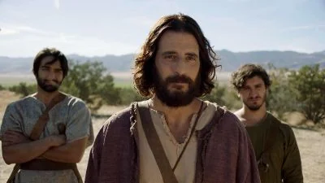
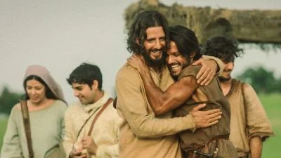
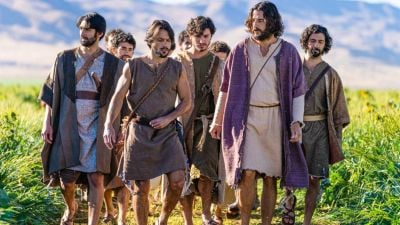
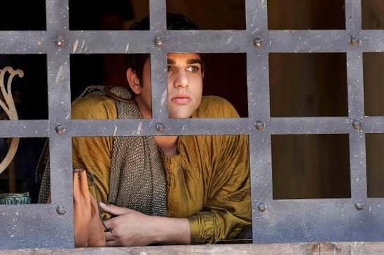
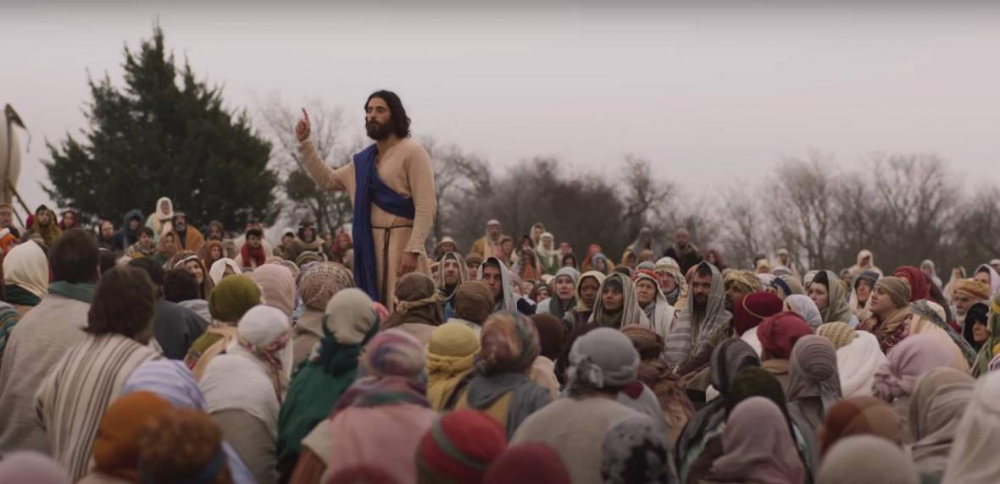
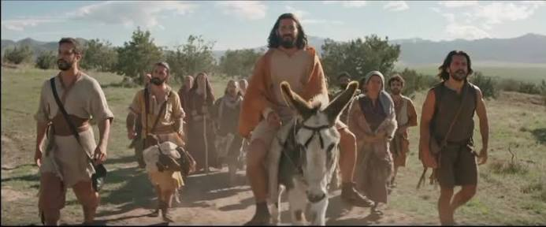

Viñetas del Evangelio
El Llamado
Portada
Una historia en viñetas.
El Maestro
Presencia serena.
Pedro
Firme y decidido.
Andrés
El primero en seguir la llamada.
Milagro
Asombro en la multitud.
Bautismo
Un nuevo comienzo.
Los Discípulos
Hermanos
Unidos por la fe.
Primos
Lazos cercanos.

Hijos del trueno
Carácter ardiente.

Abrazo
Fraternidad y encuentro.

Todos juntos
La comunidad se reúne.
Milagros y Camino

El recaudador
Una mirada que transforma.
Luz de Dios
Claridad en el horizonte.

Galilea
Colinas y caminos.

Hacia Jerusalén
El viaje continúa.
La Última Cena
Un momento inolvidable.
Epílogo
Continuará…
← Volver a Práctica 1